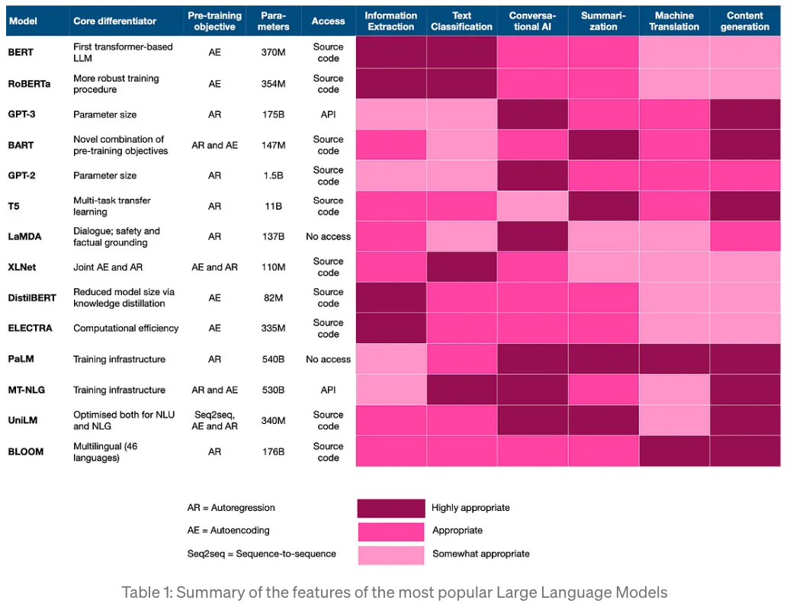

OBS! Siden er under utvikling (16. februar 2023).
Design AI (eller annen tittel?)
Etter å ha lest denne web-siden, skal du:
- kunne forstå vår visjon
- kunne forstå vår tilnærming til formalisering
- se et forslag for arkitekturen for vår løsning
1 Innledning
Vår visjon er å [be]vise bruken av eksisterende ML rammeverk i undervisning av design av datasystemer. Designkrav er ofte gitt som uformelle beskrivelser og må formaliseres for å bli representert i programvaren. Etter formaliseringen kan LLM, PaLM, GPT-3 modeller brukes for å verifisere designet.
Informasjonsmengden tilgjengelig på WWW er enorm og å finne relevant og pålitelig informasjon er utfordrende. Både for studentene og lærere er det krevende å bearbeide mengden av ny informasjon samt strukturere og kontekstualisere den. Ved å utforske anvendelse av eksisterende ML (MaskinLæring) rammeverk, ønsker vi å kritisk se på muligheter for å integrere "lokal" kunnskap (relatert til design av datasystemer) med ML rammeverk. Det er kjent at eksisterende programvare, som anvender store ML rammeverk, sliter med problemer som mangel på nyeste informasjon, "forurensning" (vanskelig å vite om resultatet er kun en gjengivelse av noe som modellen "har sett" før eller om modellen har "skapt" resultatet selv) og [ukvalifisert] gjetting.
Det er foreslått flere tilnærminger for å forbedre eksisterende ML rammeverk. Å "lære" modellene matematisk logikk er et forslag, som baserer seg på en teori om at matematisk logikk er den mest presise logikken som mennesker har og at den er mest ufordrende å lære. Hvis modellen klarer å "lære" det, så vil man minske sjansen for [ukvalifisert] gjetting og motstridende (logisk, som ofte sammenfaller med intuitivt) uttalelser for andre input en matematiske beskrivelser. Metoden foreslått av (Jiang et al., 2022) baserer seg på tre faser, som ligner på kjente faser fra design og systemutvikling, - drøfte, skissere og bevise (Draft, Sketch, and Prove (DSP)). Ved å ta i bruk eksperimentelle modeller relatert til denne metoden, ønsker vi å teste beskrivelser (ofte kalt spesifikasjoner) innen design og systemutvikling.
Et annet forslag er å skallering av språkmodellering med stier (en. scaling language modeling with pathways)
Det finnes formaliserte metoder (og verktøy som kompilatorer) for å overføre modeller representert i et programmeringsspråk til en representasjon, som kan utføres av dagens prosessorer. Disse er direkte relatert til maskinvarearkitektur, som har vært robust de siste 50-60 år. Det finnes derimot lite formalisering for å overføre uformelle beskrivelser av systemkrav fra homo sapiens til representasjon i programmeringsspråk. Det finnes formaliseringsforsøk, som Isabelle/HOL (Nipkow, 2022) og Alloy (2021), og noen praktiske forsøk, som Rational Unified Process (Per Kroll & Philippe Kruchten, 2009) eller nyere initiativer som AlphaCode (2014).
Basert på min kunnskap, har ingen av disse blitt testet ut i praktiske undervisningssituasjoner. Vi ønsker å foreslå en versjon av en arkitektur basert på noen av disse modellene/metodene, som kan brukes for å eksperimentere med en "lokal" bruk av store ML modeller i en kontekst av våre emner. Første fasen vil være å etablere en infrastruktur for testing. Andre fasen vil være å inviterer studenter (og eventuelt partnere) til å prøve rammeverket i praksis og evaluerer resultatene. Tredje fase vil være å gjøre rammeverket bedre. En fjerde fase kan være publisering av resultater.
X Arkitektur
Beskrivelse av behovet --tekstanalyse--> Mengde med sensorer og aktuatorer ----tekstanalyse/eventulet bruk av lært modell----> Kolleksjoner av typer og funksjoner (kalt også signaturer) relatert til s&a ---formelt analyseverktøy--> relasjoner mellom typer og funksjoner plus regler multipisitet -- "logisk dom" -->
X Valg av modeller
Figur 1. Large Language Models (Lipenkova, 2022).
X Diskusjon om begreper
kanskje ikke et program, men et testmiljø/eksperimentelt miljø, som kan gjøre en Proof-of-case for anvendelse av LLM, PaLM, GPT-3 i undervisning av tjenestedesign og systemutvikling ...?
Kanskje ikke helt presist å likestille programmeringsspråk og plattform; med plattform forstår jeg operativsystem + ISA (instruksjoner for spesifikk maskinvare); usikker om vi trenger å forholde oss til plattform her, siden alle kildekode i dag kan "oversettes" til en mangfold av plattformer og "oversettere" (kompilatorer) er på et høyt formaliseringsnivå (følger matematisk logikk);
program er vanskelig å definere, siden det kan være alt fra noen få instruksjoner, til store programmer med millioner av instruksjoner; kanskje bruke "applikasjon" her?
Forslag: "De fleste IT-applikasjoner har mye til felles, uansett programmeringsspråk de er utviklet i."
objekt er egentlig ikke en "stabil"/rigid byggestein; det er en abstraksjon kun i enkelte språk, og kan brukes ikke i teoriene, som danner grunnlaget for design av programmeringsspråk; siden vi ønsker å formalisere gjennom programmeringsspråk generelt, kan det være en ide å ikke bruke "objekt" og "klasse"? Mest grunnleggende, ville jeg sagt, er kolleksjoner av typer og funksjoner. Hvis vi ønsker abstrahere utover det, så kunne vi brukt "datastrukturer". "Objektklasser" kan kanskje erstattes med moduler eller pakker. Det er disse begrepene som brukes for å beskrive hierarkier i kolleksjon av typer og funksjoner. "Objektklasser" er også noe tvetydig, siden den vanligste, meg kjente, forklaring på forbindelse mellom klasse og objekt er at et objekt er en instans av en klasse.
TYPER (og også FUNKSJONER) kan inneholde andre TYPER og på denne måten danne relasjoner. Kardinalitet kan oppfattes som funksjon, som knytter sammen ikke bare 2 entiteter med N antall entiteter.
X Valg av programmeringsrammeverk
(A Comparison of Modern Alternatives for Python in the World of Data Science - Vorsers, 2022)
X Begrepsoppklaring
begrepdefinisjon medkodepredikatbegrep (signatur, type) som i en "logisk dom" (kompilering og utførelse av kode / testing) knyttes til subjektet (som funksjonsparameter, f.eks.) som dets positive eller negative bestemmelse (resultatet av den "logiske dommen")autoregression(AR)autoencoding(AE) ingen "density estimation"density estimation
X Referanser
- Alloy. Alloytools.org. (2021). http://alloytools.org/
- AlphaCode. (2014). Deepmind.com. https://alphacode.deepmind.com/ (AlphaCode, 2014)
- Chowdhery, A., Narang, S., Devlin, J., Bosma, M., Mishra, G., Roberts, A., Barham, P., Chung, H. W., Sutton, C., Gehrmann, S., Schuh, P., Shi, K., Tsvyashchenko, S., Maynez, J., Rao, A., Barnes, P., Tay, Y., Shazeer, N., Prabhakaran, V., & Reif, E. (2022). PaLM: Scaling Language Modeling with Pathways. ArXiv.org. https://doi.org/10.48550/arXiv.2204.02311 (Chowdhery et al., 2022)
- Han, J. M., Rute, J., Wu, Y., Ayers, E. W., & Polu, S. (2021). Proof Artifact Co-training for Theorem Proving with Language Models. ArXiv.org. https://doi.org/10.48550/arXiv.2102.06203 (Han et al., 2021)
- Jackson, D. (2016). Software abstractions : logic, language, and analysis. The Mit Press. (Jackson, 2016)
- Jiang, A. Q., Welleck, S., Zhou, J. P., Li, W., Liu, J., Jamnik, M., Lacroix, T., Wu, Y., & Lample, G. (2022). Draft, Sketch, and Prove: Guiding Formal Theorem Provers with Informal Proofs. ArXiv.org. https://doi.org/10.48550/arXiv.2210.12283 (Jiang et al., 2022)
- Nipkow, T. (2022). Isabelle. In.tum.de. https://isabelle.in.tum.de/ (Nipkow, 2022)
- Per Kroll, & Philippe Kruchten. (2009). The rational unified process made easy : a practitioner’s guide to the RUP. Addison-Wesley. (Per Kroll & Philippe Kruchten, 2009)
- Lipenkova, J. (2022, September 26). Choosing the right language model for your NLP use case. Medium; Towards Data Science. https://towardsdatascience.com/choosing-the-right-language-model-for-your-nlp-use-case-1288ef3c4929 (Lipenkova, 2022)
- DistilBERT. (2014). Huggingface.co. https://huggingface.co/docs/transformers/model_doc/distilbert (DistilBERT, 2014)
- A Comparison of Modern Alternatives for Python in the World of Data Science - Vorsers. (2022, March 4). Vorsers. https://www.vorsers.com/blog/a-comparison-of-modern-alternatives-for-python-in-the-world-of-data-science/# (choice of programming language, (A Comparison of Modern Alternatives for Python in the World of Data Science - Vorsers, 2022))